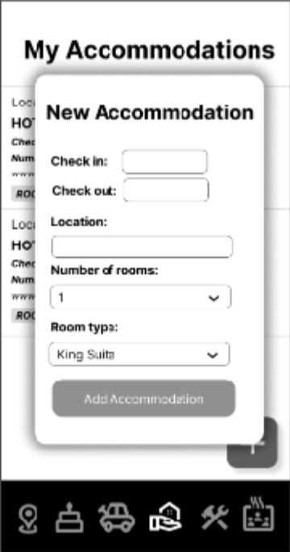
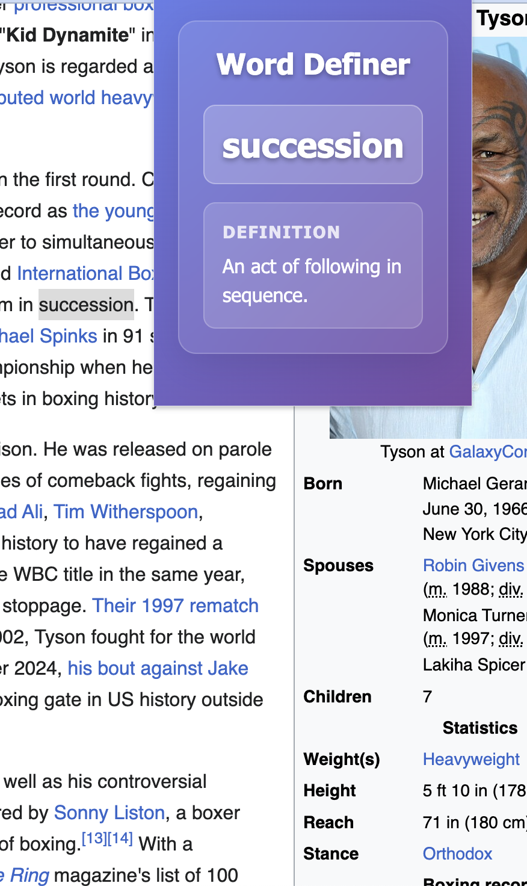

A mobile application that tracks microplastics exposure through food scanning utilizing Tensorflow and data from Nat Friedman's plastic-list. Providing users with detailed analytics and health insights.

WanderSync: Travel Planning App
Comprehensive Android travel planning application that enables users to manage destinations, book accommodations and dining reservations, built using Java, Android SDK, and Firebase backend services.

Word Definer Google Extension
A Chrome extension that provides instant word definitions and translations while browsing, enhancing reading comprehension and language learning.
Developed PlastyAI, a microplastic exposure tracking app that helps users identify foods, estimate plasticizer contamination, and receive personalized health tips to reduce their exposure with data derived from Nat Friedman's plastic list (ng/serving)
Built and trained a custom TensorFlow Lite model on 302 food classes from Fruits360 and Food101 datasets, then integrated it into a React Native mobile app for on-device food recognition
Built comprehensive data tracking system using AsyncStorage for local persistence, with weekly visualizations and trend analysis to help users monitor their microplastic exposure over time
Implemented full-stack solution including Flask API backend for server-side ML inference and deployed to ios app store.
1 of 6
Developed WanderSync, a comprehensive Android travel planning application that enables users to manage destinations, book accommodations and dining reservations, built using Java, Android SDK, and Firebase backend services.
Implemented full-stack solution with Firebase Authentication for user management, Firestore for real-time data storage, and Google Places API for location services.
Built responsive UI with Material Design components, custom animations, and intuitive navigation for seamless travel planning experience.
Integrated booking APIs and payment processing to enable direct hotel reservations and dining reservations within the app.
1 of 5
Developed a Google Chrome extension that provides definitions when users click on words, utilizing Javascript, HTML, and P5.
Demonstrated web development and UI/UX design proficiency by developing functionality for activating a popup with the word definition.